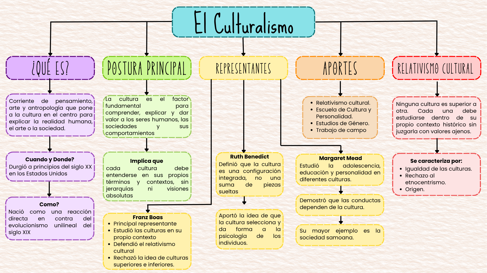
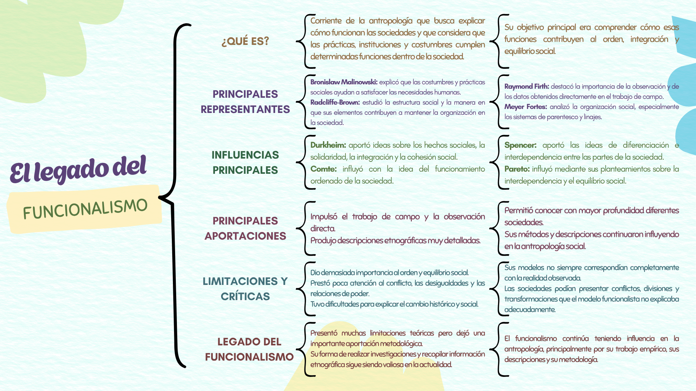
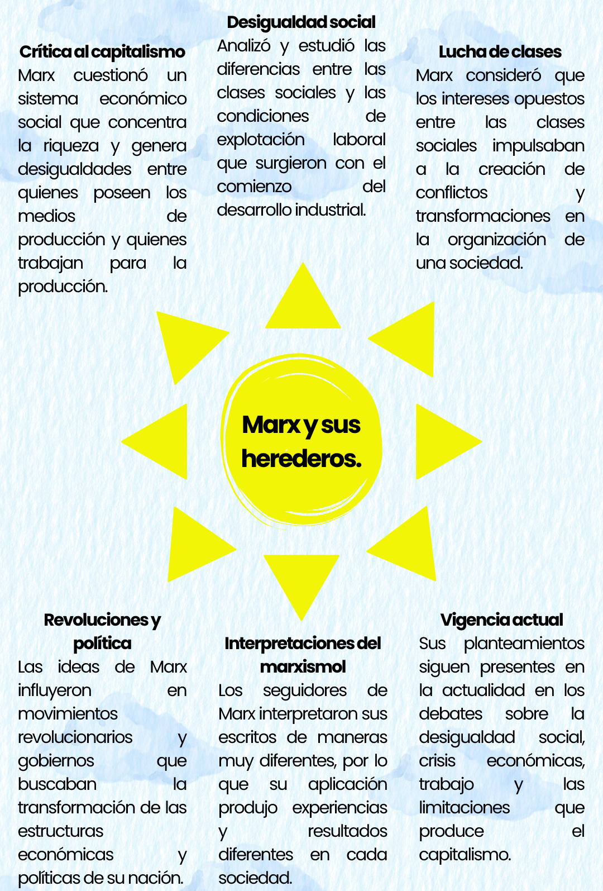
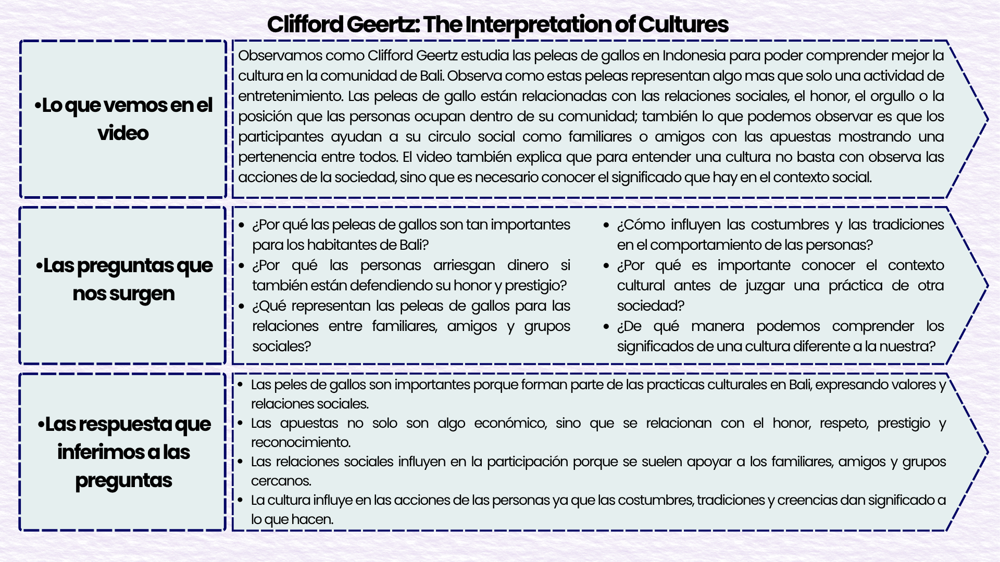
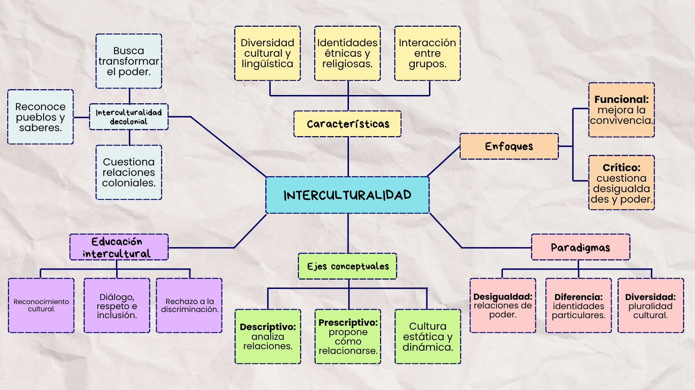

BIENVENIDA
Wiki de Antropología
Esta wiki reúne las evidencias de aprendizaje relacionadas con
el estudio de la cultura, las sociedades y el comportamiento humano.
Su propósito es organizar los contenidos de manera visual y facilitar
la comprensión de los principales conceptos antropológicos.
La información se encuentra organizada en dos categorías:
Evidencia 3 y Evidencia 4. Cada apartado incluye explicaciones,
actividades, espacios para redactar textos e imágenes de los
organizadores gráficos correspondientes.
CATEGORÍA 01
Evidencia 3
Estudio de las perspectivas antropológicas y sus aportaciones
a la comprensión de la cultura y la sociedad.
03.01
1. Culturalismo
El culturalismo destaca la importancia de la cultura para comprender
el comportamiento humano. Las costumbres, los valores, las normas y
las creencias se aprenden mediante la convivencia y la socialización.
Estos elementos influyen en la manera en que las personas interpretan
su entorno y se relacionan con los demás.
Imágen del mapa conceptual

Figura 1. Mapa conceptual sobre el culturalismo.
Referencia
INAH (2012). El Culturalismo, una corriente teórica de la antropología. Ciudad de México: INAH TV. [Video] Disponible en https://www.youtube.com/watch?v=nWqSM3hwKzw
03.02
2. Adolescencia, sexo y cultura en Samoa
Introducción:
En esta parte nos llamó la atención que Mead cuestionara la idea de que en la adolescencia es necesaria la etapa de conflictos y angustias. Al describir Samoa, nos muestra que las experiencias de los jóvenes dependen siempre de la cultura y del ambiente social, también lo que nos aprecio bastante interesante es la descripción de la vida cotidiana de la aldea donde las actividades ser realizan de forma comunitaria lo que permite comprender que cada sociedad y cultura educa y forma a sus jóvenes de una manera distinta cada una.
La educación del niño samoano.
En este capitulo nos pareció interesante la manera en que los niños samoanos aprenden desde muy pequeños a través de la convivencia y la participación de actividades familiares. El texto muestra que la educación no solo se limita a la escuela, sino que ocurre en la vida cotidiana donde los niños observan, imitan y adquieren responsabilidades. También nos llamó la atención la importancia que tienes los familiares y la comunidad en la formación de los niños y que este ejemplo nos demuestra que los niños aprenden habilidades sociales mientras participan activamente en su comunidad.
Nuestros problemas educativos considerados a la luz de la experiencia samoana.
En este capítulo nos llamó la atención la comparación que hace Mead entre la adolescencia samoana y la adolescencia estadounidense ya que explica que muchas dificultades de la adolescencia no son inevitables, sino que se relacionan con las condiciones culturales de cada sociedad. También consideramos muy importante que el crecimiento físico es similar, pero que la experiencia emocional es variable según el ambiente en el que se vive.
Educación para la elección.
Aquí nos pareció bastante interesante que Mead plantea la educación como una preparación para elegir, pero que cuestiona si ofrecemos las suficientes responsabilidades a los jóvenes. Algo que también nos pareció muy interesante es que el conocer diferentes experiencias ayuda a desarrollar mayor tolerancia a otras culturas y que la educación debe permitir comprender diversas opciones y formar personas con la capacidad de tomar decisiones con conciencia.
Referencia:
Mead, M. (1968). Introducción. La educación del niño Samoano. Nuestro problemas educativos considerados a la luz de la experiencia samoana. Educación para la elección. En: Adolescencia, sexo y cultura en Samoa. México D. F.: Planeta. pp. 23-35, 41-56, 185-216, 217-228.
03.03
3. El legado del funcionalismo
El funcionalismo estudia las prácticas culturales y las instituciones
considerando su relación con la organización de la sociedad.
Bronislaw Malinowski destacó el trabajo de campo y las necesidades
humanas, mientras que A. R. Radcliffe-Brown centró su atención en
las estructuras sociales y las relaciones entre sus componentes.
Imágen del cuadro sinóptico

Figura 2. Cuadro sinóptico del legado del funcionalismo.
Referencia: Laguna, D. (2006). El legado del funcionalismo. Limitaciones teóricas y excesos etnográficos. Revista Española de Sociología (RES), Vol. 25 (2), 241-257.
Explicación:
El funcionalismo fue una corriente muy importante para el desarrollo de la antropología moderna ya que buscó explicar el cómo diferentes prácticas e instituciones tienen ciertas funciones dentro de la sociedad. Los principales representantes estudiaron las sociedades a través del trabajo de campo y produjeron descripciones etnográficas detalladas. La influencia del funcionalismo se relacionó con las ideas de Durkheim sobre la integración, solidaridad y cohesión social. Sin embargo, también recibió críticas ya que le daba mucha importancia al orden y al equilibrio, opacando o restándole importancia al conflicto, relaciones de poder y cambios históricos de la sociedad. También algunos de sus modelos no siempre eran acordes o correspondían a las realidades de cada sociedad y a pesar de estas limitaciones, su legado continua siendo demasiado importante por el valor de sus investigaciones de campo y la gran extensión de información etnográfica que ha aportado a la antropología.
Referencia
INAH (2012). El Culturalismo, una corriente teórica de la antropología. Ciudad de México: INAH TV. [Video] Disponible en https://www.youtube.com/watch?v=nWqSM3hwKzw
03.04
4. Los argonautas del pacífico occidental.
1. Prefacio y Prólogo del autor (pp. 5-12)
En el prefacio pudimos apreciar que el autor Malinowski hace incapie en la manera en la que se hace el trabajo de campo etnográfico inmersivo. El autor argumenta que el investigador no debe limitarse a observar desde una posición distante o académica, sino vivir y convivir directamente con los nativos. Su propuesta de captar el punto de vista del nativo, su relación con la vida y su visión del mundo transforma por completo la manera de entender la antropología moderna, dándole un rigor científico basado en la experiencia directa.
2. Introducción: Objeto de esta investigación (pp. 13-18)
Nos pareció interesante que el autor en esta sección define el propósito central de la etnografía: documentar la cultura en su totalidad y no solo coleccionar datos aislados de costumbres exóticas. Malinowski detalla el fenómeno del kula, un sistema de intercambio ceremonial intertribal que desafía la visión económica occidental del beneficio material puro. Descubrir que un complejo ritual de intercambio comercial y simbólico sostiene la estructura social, el prestigio y los lazos de paz entre islas abre una perspectiva totalmente nueva sobre la racionalidad humana.
3. Introducción: Método y finalidad de esta investigación (pp. 19-42)
Finalmente, nos pareció interesante la exposición metodológica rigurosa que plantea el autor, conocida como "observación participante". Malinowski detalla los métodos concretos para registrar la vida imponderable de la comunidad, como la recolección de estadísticas de la realidad y la recopilación de corpus de documentos lingüísticos nativos. Su enfoque demuestra que la etnografía requiere tanto la empatía y la inmersión prolongada como la sistematización rigurosa, garantizando así que los fenómenos culturales sean explicados con absoluta fidelidad científica.
Referencia:
Malinowski, B. (1973). Prefacio. Prólogo del autor. Introducción: objeto, método y finalidad de esta investigación. En Los argonautas del pacífico occidental (pp. 5-12, 13-18 y 19-42). Planeta.
03.05
5. Preguntas de la teoría estructularista.
Lo que sabemos
Sabemos que Claude Lévi-Strauss fue un antropólogo que aportó al estudio de las culturas a través del estructuralismo y que esta teoría busca comprender las estructuras que existen en las costumbres, mitos y formas de pensamientos de las sociedades. También ahora sabemos que aunque las culturas son diferentes, pueden llegar a compartir algunas maneras de interpretar, entender y comprender el mundo.
Lo que aprendimos
Aprendimos que la cultura no solo se compone de costumbres y tradiciones, sino también de símbolos, ideas, creencias y culturas que en influyen en la vida de las personas. También aprendimos que Claude Lévi-Strauss estudiaba los mitos de las culturas para encontrar semejanzas, parecidos y patrones entre las diferentes sociedades lo que nos permite comprender que las diferencias culturales son muy importantes y que existen elementos comunes en que se organizan los pensamientos y la realidad.
Lo que queremos saber
Queremos conocer cómo Claude Lévi-Strauss analizaba los mitos y costumbres para encontrar las semejanzas entre culturas y también sobre cómo podemos aplicar el estructuralismo para estudiar las sociedades de la actualidad y que ideas son útiles para entender el comportamientos de las actuales culturas y sociedades, como su comportamiento, tradiciones y sus relaciones sociales de su entorno.
Referencia:
SUVUAGRO (2017). Historia de la cultura – Tema 4. Claude Lévi-Strauss. Guerrero: UAGro. [Video]. Recuperado de: https://www.youtube.com/watch?v=W9aytbN5s7Y
03.06
6. Diagrama radial
El diagrama radial permite organizar un concepto central y relacionarlo
con ideas secundarias. En este apartado se incorporará la imágen del
diagrama solicitado en la actividad.

Figura 4. Diagrama radial de los conceptos antropológicos.
Referencia: Lévi-Strauss, C. (1987). La estructura de los mitos. En: Antropología estructural. Barcelona: Paidós Básica. pp. 229-252.
Explicación del diagrama radial
Lévi-Strauss propone en el texto estudiar los mitos como un lenguaje cuyo significado depende de las relaciones entre sus elementos y no solo la historia que narran. También argumenta que para comprender los mitos es muy necesario el poder identificar cuales son los componentes de la historia y analizarlos para observar como se relacionan entre sí mismos ya que un mismo mito puede tener diferentes versiones o adaptaciones por lo que compararlas permite a encontrar y descubrir semejanzas, transformaciones o estructuras compartidas. Lévi-Strauss también explica que los relatos míticos siempre sueles organizarse a través de oposiciones como la vida y la muerte ya que estas contradicciones pueden llegar a generar tensiones que el mito intenta relacionar a través de los personajes y las situaciones. Desde este punto de vista, los mitos no son solo relatos sin algún tipo de lógica, sino que son formas de pensamientos que ayudan a las culturas y a las sociedades a entender su realidad a través de la interpretación.
Referencia:
Lévi-Strauss, C. (1987). La estructura de los mitos. En: Antropología estructural. Barcelona: Paidós Básica. pp. 229-252.
03.07
7. Teoría Marxista
El mapa cognitivo de sol coloca el tema principal en el centro y
distribuye alrededor de él las características o ideas que permiten
comprenderlo.

Figura 5. Mapa cognitivo tipo sol.
Referencia:
DW Documental (2018). Marx y sus herederos. Berlín. DW Documental. [Video]. Recuperado de: https://www.youtube.com/watch?v=hyz20gWgltg&t=1s
08.03
8. Marx para Principiantes.
Lo que consideramos positivo
1.- Accesibilidad Pedagógica: El uso de herramientas como la historieta facilito la comprensión de conceptos filosóficos y económicos complejos.
2.- Contextualización histórica: Explica con claridad la transición del feudalismo al capitalismo y el surgimiento de las clases sociales como la burguesía y el proletariado.
3.- Crítica al plusvalor: Explica de manera clara como se genera la explotación y la aprobación del trabajo no pagado en el sistema capitalista.
4.- Materialismo histórico: Nos muestra las condiciones materiales y económicas las cuales determinan el desarrollo de la sociedad humana a los largo del tiempo.
5.- Desmitificación del sistema: Se rompe con la idea de que el capitalismo es un orden natural. presentándolo como un constructor histórico insuperable.
6.- Vigencia de la lucha de clases: Reivindica el papel del conflicto social como motor de los cambios históricos y la emancipación de los sectores oprimidos.
7.- Crítica a la ideología dominante: Explica cómo las instituciones legitiman el poder y justifican el statu quo de las clases privilegiadas.
8.- Enfoque humanista: El objetivo final del marxismo es la liberación del ser humano frente a la alineación del trabajo deshumanizado.
9.- Claridad en la teoría del valor: Explica los fundamentos principales de la economía política marxista sin recurrir a tecnicismos.
10.- Invitación al pensamiento crítico: Motiva a cuestionarnos sobre ciertas estructuras socioeconómicas vigentes y a buscar alternativas mas justas.
Lo que consideramos negativo
1.- Simplificación excesiva: Al tratarse de una obra humorística, en ocasiones llega a reducir procesos históricos y debates filosóficos complejos a caricaturas.
2.- Visión lineal de la historia: Puede dar la impresión de un determinismo económico estricto donde la agencia humana queda relegada frente a las estructuras.
3.- Ausencia de herederos contemporáneos: El texto se centra primordialmente en el marxismo clásico, omitiendo los matices de la teoría crítica posterior.
4.- Tono ideologizado: Cierta tendencia a polarizar de manera absoluta entre buenos y malos, lo que puede restar objetividad analítica académica.
5.- Falta de autocrítica histórica: No aborda con profundidad las desviaciones autoritarias sufridas por los regímenes que intentaron aplicar el marxismo en el siglo XX.
6.- Enfoque: El tipo de enfoque limita su análisis principalmente a la realidad europea occidental dejando de un lado las dinaminas de la periferia y el colonialismo.
7.- Cultural: Explica otros fenómenos sociales y culturales exclusivamente hechos a partir de la infraestructura económica.
8.- El estado: No profundiza como tal en la complejidad institucional del estado capitalista y moderno y sus mecanismos de consenso.
9.- Optimismo revolucionario: Presenta la superación del capitalismo como un desenlace histórico casi inevitable que la realidad ha demostrado ser más compleja.
10.- Limitaciones actuales: Al ser un texto clásico de divulgación, no contempla los desafíos del capitalismo digital, financiero y globalizado actual.
Lo que consideramos interesante
1.- El formato de historieta didáctica: Nos resulta interesante cómo la sátira gráfica puede democratizar el conocimiento de la filosofía política y la economía.
2.- La biografía de Karl Marx: El recorrido humano por las dificultades personales, el exilio y la intensa labor intelectual compartida con Friedrich Engels.
3.- Dialéctica:Cómo Marx adopta la dialéctica de Hegel pero la fundamenta en la realidad material y no en el espíritu absoluto.
4.- Mercancía: La manera en que las mercancías adquieren vida propia y valor místico en el mercado, ocultando las relaciones humanas de explotación.
5.- Movimientos obreros y las revoluciones europeas: Contextualizar el surgimiento de los movimientos obreros y las revoluciones europeas del siglo XIX como respuesta a la miseria industrial.
6.- Religión: La famosa consideración de la religión como un mecanismo consolador ante el sufrimiento real de los aquellas personas que no poseen los medios de producción (como las tierras, las fábricas, las máquinas, la tecnología o el capital) necesarios para producir bienes y ganarse la vida de manera independiente.
7.- Trabajo: Diferenciar con claridad entre trabajo y fuerza de trabajo como clave analítica del funcionamiento del capital.
8.- El análisis de la Comuna de París: Cómo Marx estudió este acontecimiento para repensar las formas de organización y autogestión democrática de los trabajadores.
9.- La interconexión entre teoría y praxis: El principio marxista de que la filosofía no debe limitarse a interpretar el mundo, sino a transformarlo.
10.- Actualidad: Observar como los problemas de la concentración de las riquezas planteados en el siglo XIX siguen plenamente vigentes hoy en día.
CATEGORÍA 02
Evidencia 4
Organizadores gráficos, actividades de reflexión y análisis
de los conceptos antropológicos.
04.01
1. Clifford Geertz: The Interpretation of Cultures

Figura 1. Clifford Geertz: The Interpretation of Cultures
Referencia:
Then & Now (2018). Clifford Geertz: The Interpretation of Cultures (The Balinese Cockfight). https://www.youtube.com/watch?v=avW6g31hy-c
04.02
2. Colonialidad
El texto se tomo del PDF
Persona, tiempo y conducta en Bali. En La interpretación de las culturas - Clifford Geertz.
El texto de Clifford Geertz "Persona, Tiempo y Conducta en Bali" ofrece un enfoque distinto para comprender la especificidad cultural de los conceptos de identidad, temporalidad y acción social que no son universales sino que son fenómenos culturalmente construidos a través de ciertos sistemas simbólicos. Una de las características más interesantes del texto es el análisis del concepto de persona dentro de la cultura balinesa. Contrario a la tradición occidental donde la persona se ve como un sujeto autónomo Geertz muestra que en la cultura balinesa la identidad de cada individuo está estructurada en términos de ciertos títulos de parentesco,nombres de orden de nacimiento y términos de teconomía. Así el individuo se despersonaliza para ser introducido en ciertos sistemas sociales estandarizados. La idea de persona se convierte en la idea de un actor que realiza ciertos roles que previamente fueron asignados dentro de ciertos espacios institucionalizados. Lo importante aquí no es la idiosincrasia personal del individuo sino la correcta ejecución de los patrones culturales.Igualmente interesante es el tratamiento del tiempo en este texto. Contrario a la percepción lineal,progresiva e histórica del tiempo en Occidente Geertz describe la percepción del tiempo como la idea de ciclo temporal que tiende a anular el desarrollo histórico a través del uso de calendarios rituales complejos. Esta concepción del tiempo refuerza un modelo de conducta social sin ningún clímax dramático ni acumulación donde el objetivo es mantener el equilibrio cósmico. En general este texto vale la pena prestarle atención por la forma en la que desconstruye la idea de la universalidad de la naturaleza individualista de los seres humanos.
Referencia:
Geertz, C. (2006). Persona, tiempo y conducta en Bali. En la interpretación de las culturas. Barcelona: Gedisa. pp.238-299
04.03
3. Diagrama Radial y Argumentación.

Figura 2. Mapa semántico de los conceptos estudiados.
Referencia: McLaren, P. (1995). La escuela como un performance ritual: hacia una economía política de los símbolos y gestos educativos.
Explicación:
McLaren plantea que la escuela debe comprenderse como un lugar o espacio cultural en donde las practicas educativas se relaciones con lo social, las creencias y las relaciones de poder. Durante el capitulo II “El Escenario”, McLaren presenta el contexto que existe en la escuela de St. Ryan la cual se ubica en Toronto, Canadá, para poder analizar como la vida escolar toma un significado importante a través de las interacciones entre estudiantes, docentes y otros integrantes que conforman la escuela.
Desde este punto de vista, la escuela no solo es un lugar que esta diseñado para transmitir conocimientos, sino que también es un espacio donde se construyen normas, valores, identidades y formas de comportamiento. También las creencias, costumbres y símbolos ayudan a que los estudiantes puedan interpretar su realidad y se puedan también relacionar con los demás.
Consideramos que este planteamiento es importante ya que nos ayuda a reconocer que la educación no ocurre de manera aislada o independiente, sino que también influye el contexto social y cultural. Es por ello, que el analizar el escenario escolar nos permite identificar las desigualdades que existen al igual que comprender las experiencias de los estudiantes por lo que es fundamental promover una enseñanza reflexiva, critica e inclusiva que valore y refuerce la convivencia respetuosa.
Referencia:
McLaren, P. (1995). La escuela como un performance ritual: hacia una economía política de los símbolos y gestos educativos.
04.04
4. Mapa semántico de antropología

Figura 3. Mapa semántico de los conceptos estudiados.
Referencia: Dietz, G. (2017). Interculturalidad: una aproximación antropológica. Perfiles educativos, 39(156), 192-207.
Explicación:
Podemos entender que la interculturalidad es más que solo convivencia entre personas de distintas culturas ya que implica analizar y entender cómo se construyen sus relaciones sociales. Dietz explica en el texto que estas interacciones influyen en las personas a través de la lengua, la etnicidad, religión, creencias, nacionalidad o las relaciones de poder por lo que no basta solo reconocer que existen diferencias, sino que también es necesario identificar las desigualdades y la exclusión que afectan a los ciertos grupos.
Dietz también menciona una interculturalidad funcional, que está orientada a mejorar la comunicación y la convivencia sin tener que modificar las estructuras que ya existen. También se menciona la interculturalidad critica que cuestionas las desigualdades históricas por lo que plantea analizar y entender la diferencia y la diversidad ya que cada dimensión permite enter un aparte de la realidad social.
En el ámbito educativo, este punto de vista o perspectiva exige que se evite lo más que pueda la creación de estereotipos y no atribuir las diversas dificultades escolares únicamente a la cultura que tiene cada estudiante al igual que su realidad social por lo que la escuela debe favorecer el dialogo, el reconocimiento a las distintas identidades culturales y una participación equitativa. Por ellos, consideramos que la interculturalidad no solo consiste en tolerar, sino en revisar las ideas y prácticas de los demás para así contribuir a una sociedad mas justa, inclusiva y respetuosa.
Referencia:
Dietz, G. (2017). Interculturalidad: una aproximación antropológica. Perfiles educativos, 39(156), 192-207
04.05
5. Sintesis
El texto se tomo del PDF
Interculturalidad crítica y educación intercultural - Catherine Walsh
El enfoque de Catherine Walsh se centra en el concepto de interculturalidad el cual ella define no como algo neutral o descriptivo sino como un enfoque teórico-político destinado a transformar las estructuras coloniales. Existen tres enfoques principales en su trabajo. Primero está la interculturalidad relacional la cual se refiere al contacto diario entre culturas en un sentido empírico. En segundo lugar esta la interculturalidad funcional la cual es apoyada por el Estado y el mercado y busca reconocer la diversidad cultural sin cambiar las desigualdades de poder ni cuestionar el actual sistema capitalista neoliberal. Finalmente esta la interculturalidad crítica la cual se sugiere como un proyecto de descolonización. La base de este enfoque radica en la premisa de que las relaciones interculturales están impregnadas de la colonialidad del poder, el conocimiento y el ser, la cual es un legado del periodo histórico del colonialismo moderno. Esta subordinan a los pueblos indígenas y a los afrodescendientes a los grupos dominantes. Por lo tanto la interculturalidad crítica no busca la inclusión y la tolerancia dentro de las estructuras dominantes sino que busca crear un nuevo horizonte político desafiando los mismos fundamentos del Estado monocultural y eurocéntrico. En cuanto al campo de la educación la educación intercultural no debería consistir en la celebración de festivales folclóricos y en agregar nuevos materiales al currículo de los grupos minoritarios. Catherine Walsh insiste en que la educación intercultural crítica debería ser un proceso de transformación transversal y revolucionario que afecte a todas las esferas de la sociedad. Esto significa que los enfoques hegemónicos deben ser deconstruidos, el conocimiento marginal debe ser llevado al debate y debe haber un diálogo horizontal como un desafío al racismo estructural. Por lo tanto la educación se convierte en una práctica pedagógica y política descolonizadora la cual es esencial para transformar las relaciones sociales y para lograr la justicia cognitiva y la equidad.
Referencia:
Walsh, C. (2010). Interculturalidad critica y educación intercultural. En: Construyendo interculturalidad critica, La Paz IIE. pp. 75-96
04.06
6. Cuadro comparativo General


Figura 4. Cuadro comparativo de las perspectivas antropológicas.
BIBLIOGRAFÍA
Referencias
1.- Antropología UNLAM (2021). Entrevista a Margaret Mead. Recuperado de: https://www.youtube.com/watch?v=WsN3_9wRonQ
2.- Dietz, G. (2017). Interculturalidad: una aproximación antropológica. Perfiles educativos, 39(156), 192-207.
3.- Geertz, C. (2006). Persona, tiempo y conducta en Bali. En La interpretación de las culturas. Barcelona: Gedisa. pp. 299-238.
4.- Ilich, I. (2016). La represión del dominio vernáculo. En: Hornedo, B. (comp.) Iván Ilich, un humanista radical. Barcelona: Fondo de Cultura Económica, Ediciones La Llave.
5.- INAH (2012). El Culturalismo, una corriente teórica de la antropología. Ciudad de México: INAH TV. Recuperado de: https://www.youtube.com/watch?v=nWqSM3hwKzw
6.- Laguna, D. (2006). El legado del funcionalismo. Limitaciones teóricas y excesos etnográficos. Revista Española de Sociología (RES), Vol. 25 (2), 241-257.
7.- Lévi-Strauss, C. (1987). La estructura de los mitos. En: Antropología estructural. Barcelona: Paidós Básica. pp. 229-252.
8.- Malinowski, B. (1973). Prefacio. Prólogo del autor. Introducción: objeto, método y finalidad de esta investigación. En: Los argonautas del pacífico occidental. México, D. F.: Planeta. pp. 5-12, 13-18 y 19-42.
9.- McLaren, P. (1995). La escuela como un performance ritual: hacia una economía política de los símbolos y gestos educativos.
10.- Mead, M. (1968). Introducción. La educación del niño samoano. Nuestros problemas educativos considerados a la luz de la experiencia samoana. Educación para la elección. En: Adolescencia, sexo y cultura en Samoa. México D. F.: Planeta. pp. 23-35, 41-56, 185-216, 217-228.
11.- RIUS (2004). Marx para principiantes. Buenos Aires: Era Naciente.
12.- SUVUAGRO (2017). Historia de la cultura – Tema 2. Bronislaw Malinowski. Guerrero: UAGro. Recuperado de: https://www.youtube.com/watch?v=48blFXPeWsI
13.- Then & Now (2018). Clifford Geertz: The Interpretation of Cultures (The Balinese Cockfight). Recuperado de: https://www.youtube.com/watch?v=avW6g31hy-c
14.- Walsh, C. (2010). Interculturalidad crítica y educación intercultural. En: Construyendo interculturalidad crítica, La Paz: IIE. pp. 75-96.
La antropología permite comprender la diversidad humana
mediante el estudio de la cultura, la sociedad y sus transformaciones.